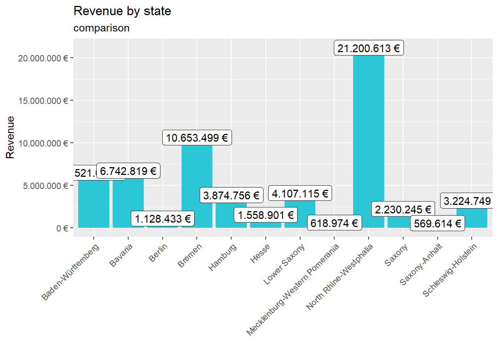
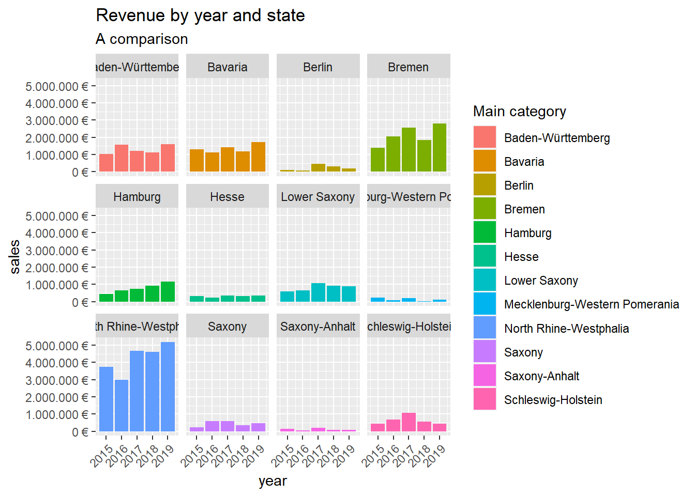
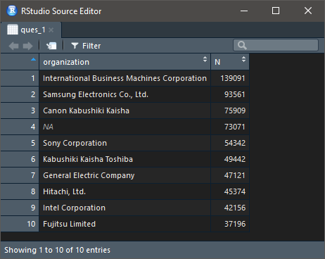
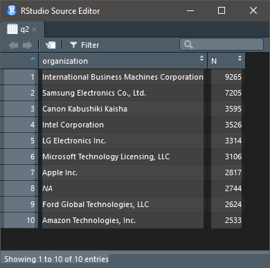
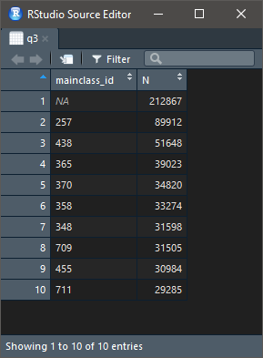
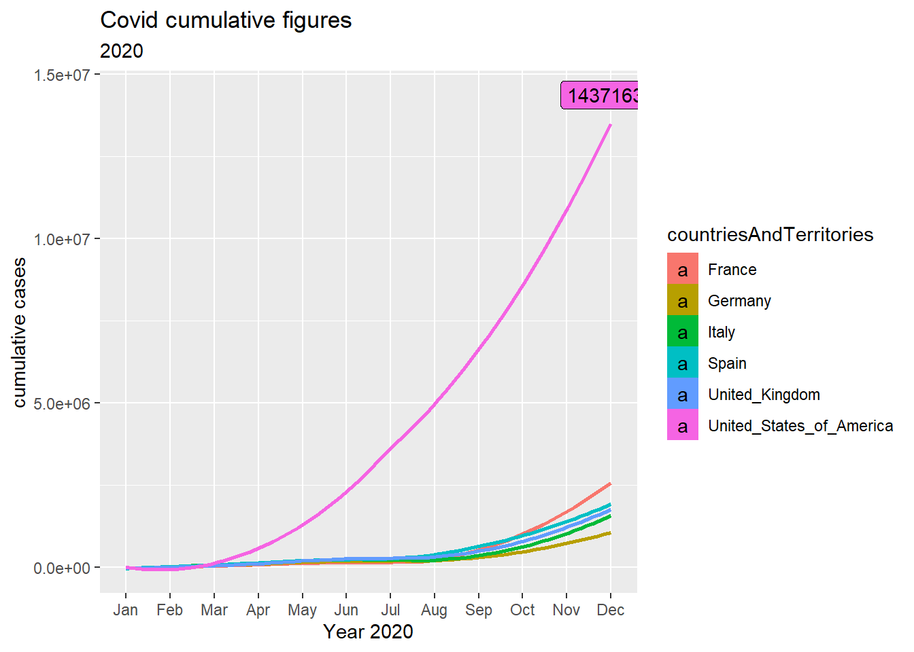
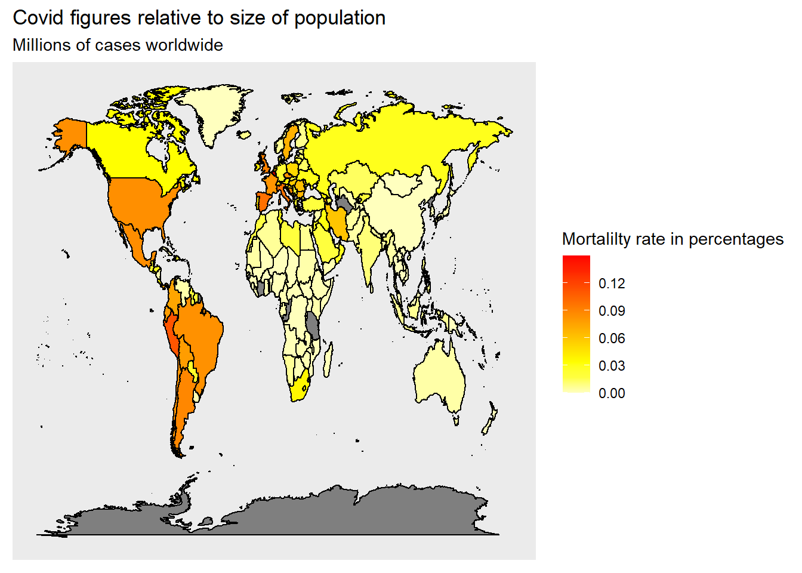

IMPORTANT: You can delete everything in here and start fresh. You might want to start by not deleting anything above this line until you know what that stuff is doing.
Last compiled: 2020-12-05
##challenge part 1
# SALES ANALYSIS ----
# 1.0 Load libraries ----
library(tidyverse)
library(readxl)
# 2.0 Importing Files ----
bikes_tbl <- read_excel(path = "00_data/01_bike_sales/01_raw_data/bikes.xlsx")
orderlines_tbl <- read_excel("00_data/01_bike_sales/01_raw_data/orderlines.xlsx")
bikeshops_tbl <- read_excel("00_data/01_bike_sales/01_raw_data/bikeshops.xlsx")
# 3.0 Examining Data ----
#glimpse(orderlines_tbl)
# 4.0 Joining Data ----
bike_orderlines_joined_tbl <- orderlines_tbl %>%
left_join(bikes_tbl, by = c("product.id" = "bike.id")) %>%
left_join(bikeshops_tbl, by = c("customer.id" = "bikeshop.id"))
# 5.0 Wrangling Data ----
challenge_bike_orderlines_wrangled_tbl <- bike_orderlines_joined_tbl %>%
separate(col = location,
into = c("city", "state"),
sep = ", ") %>%
mutate(total.price = price * quantity) %>%
select(-...1, -gender) %>%
select(-ends_with(".id")) %>%
bind_cols(bike_orderlines_joined_tbl %>% select(order.id)) %>%
select(order.id, contains("order"), contains("model"), contains("category"),
price, quantity, total.price,state,city,
everything()) %>%
rename(bikeshop = name) %>%
set_names(names(.) %>% str_replace_all("\\.", "_"))
# 6.0 Business Insights ----
library(lubridate)
sales_by_state_tbl <- challenge_bike_orderlines_wrangled_tbl %>%
select(state, total_price) %>%
group_by(state) %>%
summarize(sales = sum(total_price))%>%
mutate(sales_text = scales::dollar(sales, big.mark = ".",
decimal.mark = ",",
prefix = "",
suffix = " €"))
sales_by_state_tbl %>%
ggplot(aes(x = state, y = sales)) +
geom_col(fill = "#2DC6D6") + # Use geom_col for a bar plot
geom_label(aes(label = sales_text)) + # Adding labels to the bars
geom_smooth(method = "lm", se = FALSE) + # Adding a trendline
theme(axis.text.x = element_text(angle = 45, hjust = 1))+
scale_y_continuous(labels = scales::dollar_format(big.mark = ".",
decimal.mark = ",",
prefix = "",
suffix = " €")) +
labs(
title = "Revenue by state",
subtitle = "comparison",
x = "", # Override defaults for x and y
y = "Revenue"
)
# 6.1 Sales by Year and location ----
sales_by_year_state_tbl <- challenge_bike_orderlines_wrangled_tbl %>%
# Select columns and add a year
select(order_date, total_price, state) %>%
mutate(year = year(order_date)) %>%
# Group by and summarize year and main catgegory
group_by(year, state) %>%
summarise(sales = sum(total_price)) %>%
ungroup() %>%
# Format $ Text
mutate(sales_text = scales::dollar(sales, big.mark = ".",
decimal.mark = ",",
prefix = "",
suffix = " €"))
#sales_by_year_state_tbl
# Step 1 - Manipulate
# Step 2 - Visualize
sales_by_year_state_tbl %>%
# Set up x, y, fill
ggplot(aes(x = year, y = sales, fill = state)) +
# Geometries
geom_col() + # Run up to here to get a stacked bar plot
# Facet
facet_wrap(~ state) +
# Formatting
scale_y_continuous(labels = scales::dollar_format(big.mark = ".",
decimal.mark = ",",
prefix = "",
suffix = " €")) +
theme(axis.text.x = element_text(angle = 45, hjust = 1))+
labs(
title = "Revenue by year and state",
subtitle = "A comparison",
fill = "Main category" # Changes the legend name
) 
##challenge part 1 - spotifyr web api
library(spotifyr)
library(tidyverse)
library(knitr)
rock_artists<-get_genre_artists(
genre = "rock",
authorization = get_spotify_access_token()
)## $q
## [1] "genre:\"rock\""
##
## $type
## [1] "artist"
##
## $market
## NULL
##
## $limit
## [1] 20
##
## $offset
## [1] 0
##
## $access_token
## [1] "BQBlPrgxYAYCXTfzyXZjFAR-rthfq3w1FErHNeKNO7recwe-bIuJzYj5ABJWxidKUssr0ciXm3oPbl8mp7k"rock_artists ## # A tibble: 20 x 12
## genres href id images name popularity type uri external_urls.s~
## <list> <chr> <chr> <list> <chr> <int> <chr> <chr> <chr>
## 1 <chr ~ http~ 08GQ~ <df[,~ Flee~ 86 arti~ spot~ https://open.sp~
## 2 <chr ~ http~ 3WrF~ <df[,~ The ~ 88 arti~ spot~ https://open.sp~
## 3 <chr ~ http~ 53Xh~ <df[,~ Imag~ 89 arti~ spot~ https://open.sp~
## 4 <chr ~ http~ 1dfe~ <df[,~ Queen 89 arti~ spot~ https://open.sp~
## 5 <chr ~ http~ 3YQK~ <df[,~ Twen~ 85 arti~ spot~ https://open.sp~
## 6 <chr ~ http~ 77SW~ <df[,~ The ~ 84 arti~ spot~ https://open.sp~
## 7 <chr ~ http~ 04gD~ <df[,~ Maro~ 89 arti~ spot~ https://open.sp~
## 8 <chr ~ http~ 711M~ <df[,~ AC/DC 87 arti~ spot~ https://open.sp~
## 9 <chr ~ http~ 20JZ~ <df[,~ Pani~ 84 arti~ spot~ https://open.sp~
## 10 <chr ~ http~ 3Pho~ <df[,~ Elto~ 85 arti~ spot~ https://open.sp~
## 11 <chr ~ http~ 7Ln8~ <df[,~ Arct~ 86 arti~ spot~ https://open.sp~
## 12 <chr ~ http~ 3b8Q~ <df[,~ Flor~ 81 arti~ spot~ https://open.sp~
## 13 <chr ~ http~ 0L8E~ <df[,~ Red ~ 85 arti~ spot~ https://open.sp~
## 14 <chr ~ http~ 36QJ~ <df[,~ Led ~ 81 arti~ spot~ https://open.sp~
## 15 <chr ~ http~ 6x2L~ <df[,~ Thom~ 80 arti~ spot~ https://open.sp~
## 16 <chr ~ http~ 4UXq~ <df[,~ Fall~ 83 arti~ spot~ https://open.sp~
## 17 <chr ~ http~ 0k17~ <df[,~ Pink~ 83 arti~ spot~ https://open.sp~
## 18 <chr ~ http~ 6s22~ <df[,~ AJR 78 arti~ spot~ https://open.sp~
## 19 <chr ~ http~ 2ye2~ <df[,~ Meta~ 84 arti~ spot~ https://open.sp~
## 20 <chr ~ http~ 22bE~ <df[,~ The ~ 83 arti~ spot~ https://open.sp~
## # ... with 3 more variables: followers.href <lgl>, followers.total <int>,
## # genre <chr>##challenge part 2 - competitor web scraping
# WEBSCRAPING ----
# 1.0 LIBRARIES ----
library(tidyverse) # Main Package - Loads dplyr, purrr, etc.
library(rvest) # HTML Hacking & Web Scraping
library(xopen) # Quickly opening URLs
library(jsonlite) # converts JSON files to R objects
library(glue) # concatenate strings
library(stringi) # character string/text processing
library (dplyr)
url_home = "https://www.rosebikes.de/fahrräder/mtb"
html_home <- read_html(url_home)
type_name <- html_home %>%
html_nodes(css = ".catalog-category-bikes__title-text")%>%
html_text()
type_price <- html_home %>%
html_nodes(css = ".catalog-category-bikes__price-title")%>%
html_text()
name_list<-c()
price_list<-c()
#type_name_list= str_split(type_name," ")
for (i in type_name){
elem<-str_extract(i,".+(?=\\n)")
name_list<-c(name_list,elem)
}
for (i in type_price){
elem<-str_extract(i,"(?<= ).+(?=\\S)")
price_list<-c(price_list,elem)
}
#bike_table<- enframe(name =
#df <- ldply (price_list, data.frame)
bike_price_table<-data.frame(name_list,price_list)
bike_price_table## name_list price_list
## 1 GROUND CONTROL 1.699,00
## 2 ROOT MILLER 1.999,00
## 3 PIKES PEAK 3.099,00
## 4 THE BRUCE <NA>
## 5 COUNT SOLO <NA>
## 6 PSYCHO PATH 1.849,00
## 7 THRILL HILL 2.599,00
## 8 THRILL HILL TRAIL 2.899,00
## 9 SOUL FIRE 2.149,00 #a<-enframe(c(name=name_list,values=price_list))library(tidyverse)
library(vroom)
# Data Table
library(data.table)
library(lubridate)
# Counter
col_types_patent_assignee <- list(
patent_id = col_character(),
assignee_id = col_character(),
location_id=col_character()
)
col_types_assignee <- list(
id = col_character(),
type = col_character(),
name_first= col_character(),
name_last= col_character(),
organization= col_character()
)
assignee_tbl <- vroom(
file = "00_data/patents/assignee.tsv",
delim = "\t",
col_types = col_types_assignee,
na = c("", "NA", "NULL")
)
patent_assignee_tbl <- vroom(
file = "00_data/patents/patent_assignee.tsv",
delim = "\t",
col_types = col_types_patent_assignee,
na = c("", "NA", "NULL")
)
setDT(assignee_tbl)
setDT(patent_assignee_tbl)
joined_table <-patent_assignee_tbl%>%
left_join(y =assignee_tbl, by =c("assignee_id"="id"))
ques_1<-joined_table[,.N,by=organization][order(-N)][1:10]
col_types <- list(
id = col_character(),
date = col_date("%Y-%m-%d")
)
patent_tbl <- vroom(
file = "00_data/patents/patent.tsv",
delim = "\t",
col_types = col_types,
na = c("", "NA", "NULL"),
col_select = c(id,date)
)
setDT(patent_tbl)
q2_table <- joined_table%>%
left_join(y =patent_tbl, by=c("patent_id"="id"))
q2<-q2_table[lubridate::year(date)==2019,.N,by=organization][order(-N)][1:10]
col_types_uspc <- list(
patent_id = col_character(),
mainclass_id = col_character()
)
uspc_tbl <- vroom(
file = "00_data/patents/uspc.tsv",
delim = "\t",
col_types = col_types_uspc,
na = c("", "NA", "NULL"),
col_select = c(patent_id,mainclass_id)
)
setDT(uspc_tbl)
#<-q2_table[,c(.N,patent_id),by=organization][order(-N)][1:10]
q3_table<- joined_table%>%
left_join(y =uspc_tbl, by=c("patent_id"="patent_id"))
#q3<-q3_table[,mainclass_id,by=ques_1$organization]
main_class_list=c()
#for (i in ques_1$organization)
#{
q3<-q3_table[organization%in%ques_1$organization,.N,by=mainclass_id][order(-N)]
#}
library(tidyverse)
library(data.table)
library(lubridate)
library(ggrepel)
library(scales)
covid_data_tbl <- read_csv("00_data/covid.csv")
setDT(covid_data_tbl)
table_selection<- covid_data_tbl[year== 2020 & countriesAndTerritories %in% c("Germany" , "France" , "Spain" , "United_Kingdom","Italy","United_States_of_America")]
table_selection<- setorderv(table_selection,c("year","month","day"))
table_selection<- table_selection[,cumulative_cases:= cumsum(cases),by=countriesAndTerritories]
table_selection %>%
ggplot(aes(month, cumulative_cases,fill = countriesAndTerritories,color=countriesAndTerritories)) +
geom_smooth(level=0.0001 )+
#scale_y_continuous(sec.axis = sec_axis(~ ., breaks = d_ends))+
geom_label(data = filter(table_selection,cumulative_cases==last(cumulative_cases)), aes(label =cumulative_cases),color= 'black')+
#scale_color_manual(values=c('#999999','chartreuse','#D69F04','#B56F98','brown1',"coral1"))+
labs(
title = "Covid cumulative figures",
subtitle = "2020"
)+
xlab("Year 2020")+
ylab("cumulative cases")+
#scale_x_datetime(date_labels = lubridate::month())
scale_x_discrete(limits=month.abb) 
library(tidyverse)
library(data.table)
library(lubridate)
library(ggrepel)
library(scales)
library(maps)
covid_data_tbl <- read_csv("00_data/covid.csv")
setDT(covid_data_tbl)
table_selection<- covid_data_tbl[year== 2020 ]
#table_selection<- setorderv(table_selection,c("year","month","day"))
#table_selection<- table_selection[,cumulative_cases:= cumsum(cases),by=countriesAndTerritories]
table_selection<- table_selection%>%
mutate(across(countriesAndTerritories, str_replace_all, "_", " ")) %>%
mutate(countriesAndTerritories = case_when(
countriesAndTerritories == "United Kingdom" ~ "UK",
countriesAndTerritories == "United States of America" ~ "USA",
countriesAndTerritories == "Czechia" ~ "Czech Republic",
TRUE ~ countriesAndTerritories
))
mort_rate_table<- table_selection[, .(total_cases = sum(cases), mort_rate=100*sum(deaths)/popData2019[1]),by=countriesAndTerritories]
world <- map_data("world")
joined_data=world%>%left_join(mort_rate_table,by=c("region"="countriesAndTerritories"))
ditch_the_axes <- theme(
axis.text = element_blank(),
axis.line = element_blank(),
axis.ticks = element_blank(),
panel.border = element_blank(),
panel.grid = element_blank(),
axis.title = element_blank()
)
ggplot(data = world,mapping = aes(x = long, y = lat, group = group)) +
geom_polygon(color = "black", fill = "gray")+
geom_polygon(data =joined_data,aes(fill = mort_rate),color = "white")+
geom_polygon(color = "black", fill = NA) +
ditch_the_axes+
scale_fill_gradientn(colours = rev(heat.colors(10)),
breaks = c(0.000,0.03,0.06,0.09,0.12,0.15))+
labs(
title = "Covid figures relative to size of population",
subtitle = "Millions of cases worldwide",
fill="Mortalilty rate in percentages"
)